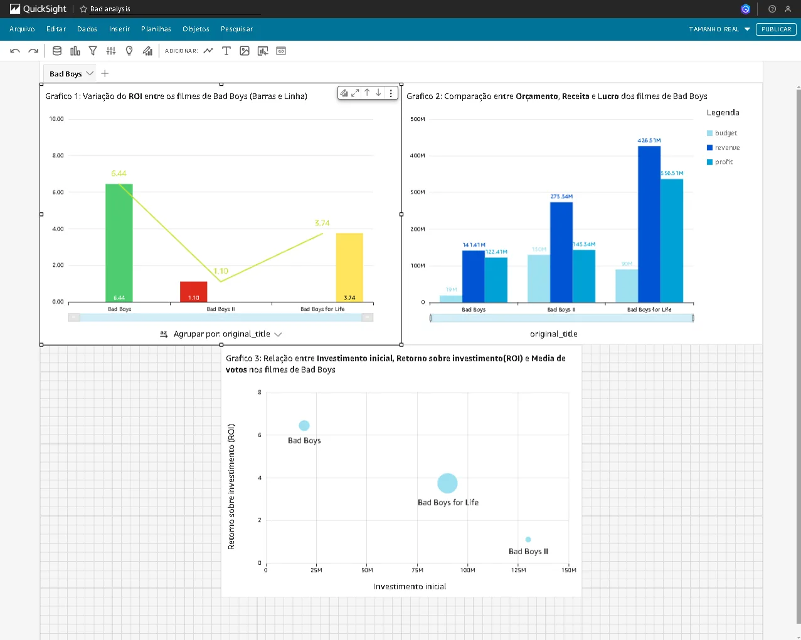
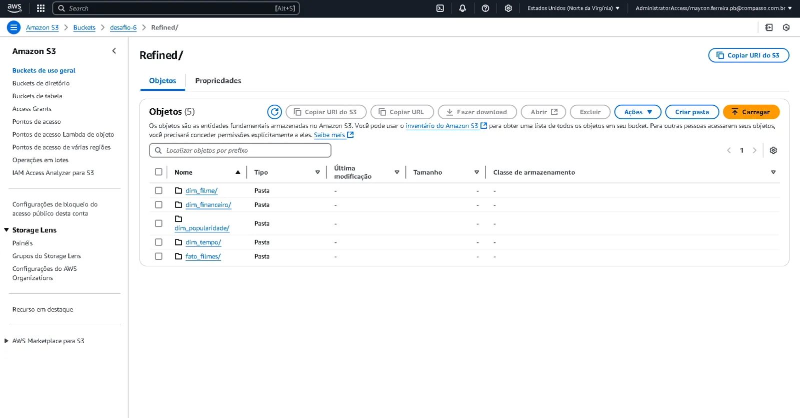
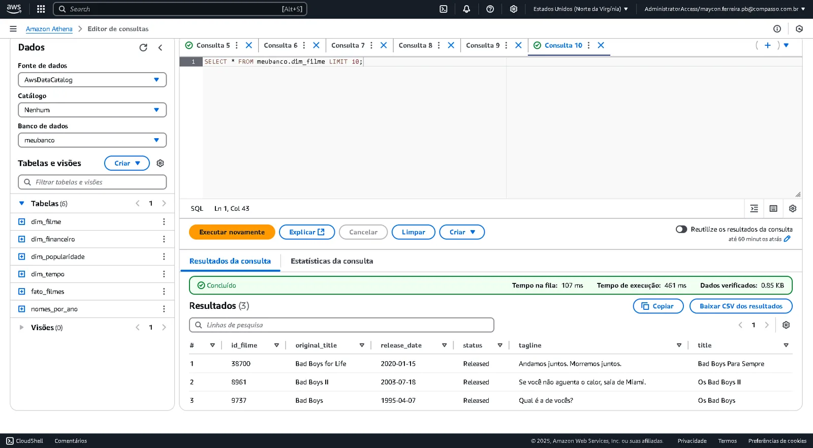
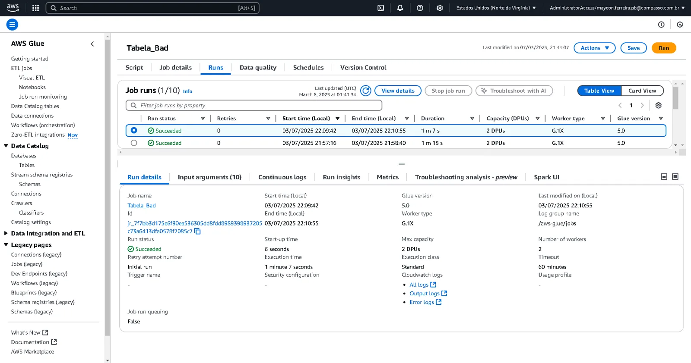

Objective
Build a practical foundation in data and cloud through successive, documented deliveries.
PRACTICAL DATA EXPERIENCE
PROGRAM COMPLETEDData Engineering
Between October 2024 and March 2025, I completed ten sprints progressing from Git, Linux and SQL fundamentals to an analytical pipeline on AWS.

PROGRAM DELIVERIES



Final pipeline
CSV and TMDB API → Lambda/boto3 → S3 Raw → Glue/PySpark → Trusted/Refined Parquet → Athena → QuickSight.
Current state
The repository preserves code, notes and screenshots from the period; the cloud environment used in the program was closed.
Build a practical foundation in data and cloud through successive, documented deliveries.
Exercises and challenges with Python, Pandas/Polars, SQL, Docker, boto3, file ingestion and the TMDB API.
I organized data into Raw, Trusted and Refined layers in S3; used Lambda and boto3 for ingestion, Glue/PySpark to transform CSV and JSON into Parquet, Athena for queries and QuickSight for presentation.
Correct scope
I present this work as practical learning. It is not a business production environment or a cloud operation that remains active.
What remains available
The code, sprint materials and documentation allow the technical journey completed during the program to be reviewed.
This case records my progress during the Compass Program without claiming volume, SLA or performance gains that are not preserved in a reproducible artifact.